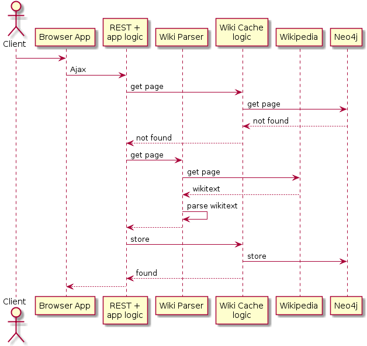

Motivation
Usage
Using the Wiking tool is very simple. Just enter a Wikipedia article about a royal person to the textbox on the right, and press Enter. The corresponding Wikipedia article will be retrieved, parsed, and the person together with her/his connections visualized. The visualization is based on a so-called force-directed graph. The nodes behave like planets having gravitation and particles having electric charge. By left clicking on a node, an dragging it to a desired position, we can fix a single node. When right clicking on a node, a context menu is visualized with the following options:
- Extract
- Open as new
- Show data
- Hide
- Open in Wikipedia
- Delete and reload
By double clicking a node, the node gets selected. After selecting several nodes, and right clicking on the display window, another context menu is displayed. It has a single option, it can hide all the selected nodes. This is a convenience feature
How it works
Every time you request for a wiki page (either by entering the page name into the textbox, or by right click + Extract on a person), a Wikipedia page should be fetched and processed. However, every Wiki page is read and parsed only once from Wikipedia. Once it is read, the parsed info gets cached in our system. The next time someone is asking for the same person, the data is retrieved from out local cache, and we wont contact the Wikipedia. Consequently, the more we use the Wiking tool, the more Wikipedia pages get cached locally, and the more performant will be out application ( getting data from out local cache is significantly faster then reading pages from Wikipedia).
Technical background
When the user is requesting for a person, the following sequence is executed:
- An Ajax query containing the requested page is sent to the server
- The application logic first consults the cache logic whether the corresponding page has already been persisted locally.
- The local caching is based on a Neo4j graph database.
- Here we assume, the Neo4j does not contain the requested data
- The application logic calls the Wiki parser module